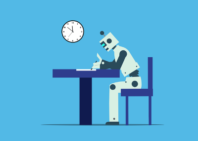

AI and Fair Use
Fair use is a legal term from American copyright law. Fair use allows the use of copyrighted material in small amounts for review, criticism, education, and other methods that do not infringe on the copyright holder. While there are general guidelines for fair use, legal challenges on the part of a copyright holder towards a potential instance of fair use are decided on a case-by-case basis (Copyright Alliance, N.D.).
The training AI of models has made liberal use of the fair use principle. Like other issues of copyright and Artificial Intelligence, the legality of AI training and fair use is an ongoing discussion.
Fair Use in AI Training
Internationally there are different standards for how generative AI can be trained and used. For more details on those differences, see our History of AI page. In the United States there are no national regulations on how AI can be trained or what AI generated material can be used for.
The use of ingesting material available online to train genAI modes has been considered fair use based on past cases of earlier forms of machine learning such as that used by Hathi Trust (Klosek, 2024). The Library Copyright Alliance’s principles on AI and copyright (2023) explain that due to the amount of content ingested by AI the effect on any one piece of media is minimal. However, "if an AI produces a work that is substantially similar in protected expression to a work that was ingested by the AI” the generated work then infringes on the original (Library Copyright Alliance Principles for Copyright and Artificial Intelligence, 2023).
At the beginning of 2025, a judge in Delaware issued a first of its kind opinion that training AI does not fall under fair use. This opinion was instigated by a legal dispute over AI models trained on legal headnotes to develop a research tool. The resulting output was “copying [that was] so obvious that no reasonable jury could find otherwise” (Madigan, 2025 para. 4).
Because fair use is determined on a case-by-case basis, this Delaware ruling will not affect the ability of all tech companies to train their Artificial Intelligence software using data scraping. However, it does offer a warning that not all AI training will fall under fair use in the future. Like with all aspects of AI and copyright, these debates are ongoing.
Market Value Effect of AI Training
The fourth guiding principle of fair use is how the use of the copyrighted material by the user could or does affect the market value or demand for the original material. When it comes to training generative AI, this effect is difficult to measure. As AI is trained on many different works of art posted on the internet. Not all of the human creators whose art is scraped by AI are paid artists, musicians, or writers. However, many are. And many more could be.
Recent statistics show that GenAI is affecting the art community. A global economic study released in 2024 estimates that music creators are poised to lose up to 10 billion Euros (over $11,000,000,000) over the next five years due to the growth of GenAI music (Walfisz, 2024). Similarly, another report looked at the job prospects for animators and other entertainment professionals due to the development of Artificial Intelligence. This report estimated that animators and artists could see a loss of 204,000 positions between 2024 and 2026 (Amidi, 2024). While it is difficult to connect individual creative projects to AI training and scraping, it is clear that generative AI is disrupting the creative industry and affecting the job security of creatives.
GenAI Self-Censoring
Social media trends and GenAI is a match made in heaven. Since DALL-E AI image generator went viral in 2021, GenAI images have flooded social media. One of the most recent trends involved asking AI to turn images into a Studio Ghibli-style art. Following an update to ChatGPT that allowed the system to produce much better images, usage skyrocketed. The Studio Ghibli trend sparked the highest usage of ChatGPT since its launch (Sriram, 2025). The trend was short-lived however. Due to increased scrutiny of AI and copyright issues, and possibly Japan’s recent discussions on protecting anime and manga from generative AI, ChatGPT added a line of code to prevent users from generating an image in the style of a living artist (Lee, 2025). This response indicates that AI developers are aware of the gray area of fair use with GenAI and are attempting to avoid potential litigation.